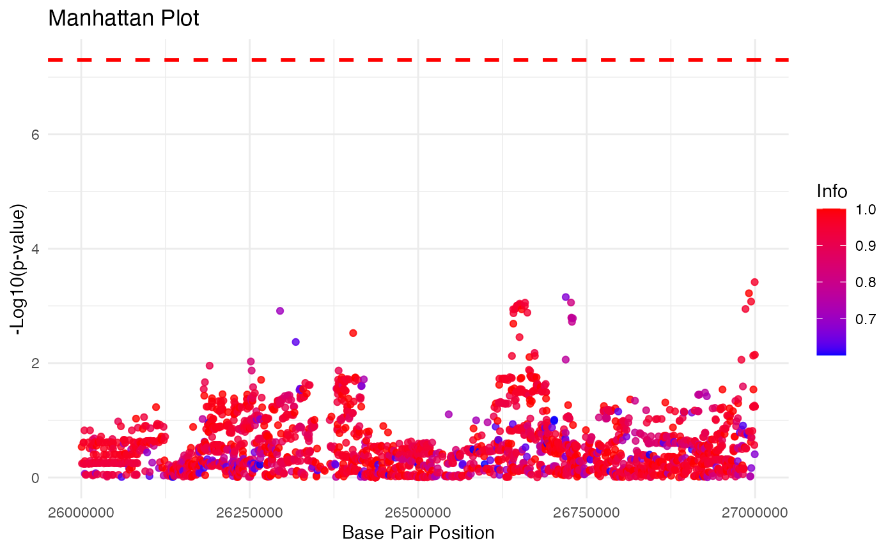

In this vignette, we will show how to use dist() to impute association Z-scores of unmeasureds SNPs from ethnically homogeneous cohorts.
Load necessary packages
# Load necessary packages
library(gauss)
library(tidyverse)
library(data.table)
library(kableExtra)Arguments
The dist() function requires ten arguments: 1. chr
chromosome number 2. start_bp start base pair position of
prediction window 3. end_bp end base pair position of
prediction window 4. wing_size the size of the area
flanking the left and right of the prediction window 5.
study_pop study population group 6. input_file
Path to the association Z-score data file. 7.
reference_index_file Path to the reference panel index file
(i.e., reference_index_file). 8. reference_data_file Path
to the reference data file (i.e., reference_data_file). 9.
reference_pop_desc_file Path to the reference population
description file (i.e., reference_pop_desc_file). 10.
af1_cutoff cutoff of reference allele, a1, frequency
The association Z-score data file should include six columns with the following column names: rsid (SNP ID), chr (chromosome number), bp (base pair position), a1 (reference allele), a2 (alternative allele), and z (association Z-score).
Firstly, we will assign the path to the association Z-score data file.
# Path to the input file
input_file <- "/Users/leed13/Desktop/GAUSS/GWAS_data/PGC/PGC2/PGC2_final/ilmn1M/pgc2.chr22.ilmn1M.Zonly.txt"
# Input file should include six columns (rsid, chr, bp, a1, a2, and z)
input.data <- fread(input_file, header = TRUE)
head(input.data)
#> rsid chr bp a1 a2 z
#> 1: rs1000427 22 36890105 A G -1.4969741
#> 2: rs1000470 22 24026845 A C 1.8407377
#> 3: rs1000539 22 20202729 A G 2.1683772
#> 4: rs10009 22 22051709 A G -0.0556759
#> 5: rs1001022 22 26403488 T C 2.9694844
#> 6: rs1001213 22 34131736 A G -0.8957244Next, we will assign the paths to reference data files to variables
# Paths to the reference files (replace these with your actual paths)
reference_index_file<-"/path/to/33kg_index.gz"
reference_data_file <- "/path/to/33kg_geno.gz"
reference_pop_desc_file<-"path/to/33kg_pop_desc.txt"Execute dist()
Lastly, we will execute the dist() function to impute association Z-scores of missing SNPs in a genomic region chr22:26M - 27M and display the results in a neat table.
af1_cutoff = 0.001
res <- dist(chr=22, start_bp = 26000001, end_bp = 27000000, wing_size = 500000, study_pop = "EUR",
input_file = input_file,
reference_index_file = reference_index_file,
reference_data_file = reference_data_file,
reference_pop_desc_file = reference_pop_desc_file,
af1_cutoff = af1_cutoff)Results
| rsid | chr | bp | a1 | a2 | af1ref | z | pval | info | type |
|---|---|---|---|---|---|---|---|---|---|
| rs144526288 | 22 | 26000077 | G | A | 0.00368 | -0.4787916 | 0.6320869 | 0.3571922 | 0 |
| rs146646304 | 22 | 26000267 | T | C | 0.00104 | 0.3406137 | 0.7333944 | 0.4976277 | 0 |
| rs542157098 | 22 | 26000579 | G | A | 0.00674 | -1.8859780 | 0.0592979 | 0.5201586 | 0 |
| rs16980509 | 22 | 26000651 | A | C | 0.06650 | -1.0535260 | 0.2921000 | 1.0000000 | 1 |
| rs16980035 | 22 | 26001101 | C | T | 0.01448 | -0.5668762 | 0.5707983 | 0.9352894 | 0 |
| rs552699792 | 22 | 26002266 | A | G | 0.00102 | 0.3764773 | 0.7065621 | 0.4857914 | 0 |
Manhattan Plot
res.info <- res %>% filter(info>0.6)
gwas.sig <- 5*10^-8
ggplot(res.info, aes(x = bp, y = -log10(pval), color = info)) +
geom_point(alpha = 0.8) +
geom_hline(aes(yintercept = -log10(gwas.sig)),
linetype = "dashed",
color = "red",
size = 1.0) +
scale_color_gradient(low = "blue", high = "red") +
labs(title = "Manhattan Plot",
x = "Base Pair Position",
y = "-Log10(p-value)",
color = "Info") +
theme_minimal()
#> Warning: Using `size` aesthetic for lines was deprecated in ggplot2 3.4.0.
#> ℹ Please use `linewidth` instead.